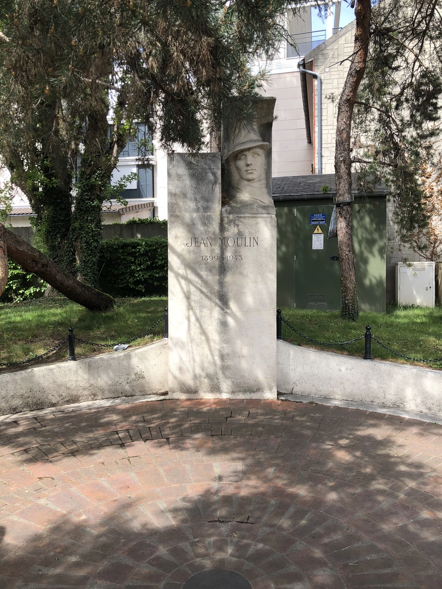

la Place Jean Moulin
Alors qu’il est préfet de l’Eure, Jean Moulin (1899-1943) préfère se rallier au Général de Gaulle plutôt que de collaborer avec l’occupant nazi. Il crée et dirige le Conseil national de la Résistance (CNR) dont la première réunion a lieu le 27 mai 1943. En raison de son implication dans la Résistance, il est trahi, arrêté et torturé par la Gestapo à Lyon. Il meurt pendant son transfert en Allemagne.
